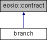

- Создано системой
 1.9.3
1.9.3
|
COOPENOMICS
v1
Кооперативная Экономика
|
Константы контракта кооперативных участков Подробнее...
#include <branch.hpp>

Открытые члены | |
| branch (eosio::name receiver, eosio::name code, eosio::datastream< const char * > ds) | |
| void | init () |
| Инициализация контракта кооперативных участков. Выполняет начальную настройку контракта. Подробнее... | |
| void | migrate () |
| Инициализация контракта кооперативных участков. Выполняет начальную настройку контракта. Подробнее... | |
| void | createbranch (eosio::name coopname, eosio::name braname, eosio::name trustee) |
| Создание нового кооперативного участка. Создает новый кооперативный участок с указанным председателем. При создании третьего участка автоматически активирует систему кооперативных участков. Подробнее... | |
| void | editbranch (eosio::name coopname, eosio::name braname, eosio::name trustee) |
| Редактирование кооперативного участка. Изменяет председателя существующего кооперативного участка. Подробнее... | |
| void | deletebranch (eosio::name coopname, eosio::name braname) |
| Удаление кооперативного участка. Удаляет существующий кооперативный участок и отключает его участников. При удалении участка, когда остается менее 3 участков, автоматически отключает систему кооперативных участков. Подробнее... | |
| void | addtrusted (eosio::name coopname, eosio::name braname, eosio::name trusted) |
| Добавление доверенного лица в кооперативный участок. Добавляет нового доверенного лица в существующий кооперативный участок. Максимальное количество доверенных лиц на один участок - 3. Подробнее... | |
| void | deltrusted (eosio::name coopname, eosio::name braname, eosio::name trusted) |
| Удаление доверенного лица из кооперативного участка. Удаляет доверенное лицо из существующего кооперативного участка. Подробнее... | |
| void | setprivate (eosio::name coopname, eosio::name braname, bool is_private) |
| Установка признака приватности кооперативного участка. Приватный кооперативный участок нельзя выбрать при вступлении или смене участка, если аккаунт пайщика не добавлен в белый список этого участка. Подробнее... | |
| void | addwhite (eosio::name coopname, eosio::name braname, eosio::name account) |
| Добавление пайщика в белый список кооперативного участка. Пайщики из белого списка могут выбрать приватный кооперативный участок при вступлении или смене участка. В белый список можно добавить любого пайщика кооператива. Подробнее... | |
| void | delwhite (eosio::name coopname, eosio::name braname, eosio::name account) |
| Удаление аккаунта из белого списка кооперативного участка. Удаляет аккаунт пайщика из белого списка приватного кооперативного участка. Подробнее... | |
| void | createdec (eosio::name coopname, eosio::checksum256 hash, eosio::name type, eosio::name initiator, document2 proposal, eosio::name braname, std::vector< decision_point > agenda) |
| Объявление собрания пайщиков с повесткой (создание решения). Универсальный механизм: тип "free" — свободное решение (фиксируется протоколом), тип "createbranch" — автоматизируемое (после утверждения уходит в совет и создаёт КУ). Подробнее... | |
| void | joindec (eosio::name coopname, eosio::checksum256 hash, eosio::name username) |
| Присоединение пайщика к собранию. Пайщик фиксируется в списке участников собрания. Подробнее... | |
| void | startdec (eosio::name coopname, eosio::checksum256 hash, eosio::name chairman, std::string address, std::vector< decision_point > agenda) |
| Открытие голосования по решению. Организатор собрания (он же председатель собрания) открывает голосование, указывая избираемого председателя кооперативного участка (из числа присоединившихся участников) и — для решения "createbranch" — адрес привязки кооперативного участка, определённый собранием. Окно голосования отмеряется автоматически (DECISION_VOTING_WINDOW_SECONDS). Подробнее... | |
| void | votedec (eosio::name coopname, eosio::checksum256 hash, eosio::name username, document2 ballot, std::vector< decision_vote_point > votes) |
| Голосование по вопросам повестки бюллетенем. Участник подаёт бюллетень-заявление с волеизъявлением (за/против/воздержался) по каждому вопросу повестки. Подсчёт ведёт контракт. Адаптация meet::vote. Подробнее... | |
| void | closedec (eosio::name coopname, eosio::checksum256 hash, document2 protocol) |
| Закрытие собрания и утверждение протокола председателем. Председатель закрывает голосование и утверждает протокол одной своей подписью (секретарь не нужен — подсчёт ведёт контракт). Проверяется кворум и итог голосования. Для типа "free" — терминал: запись стирается (история — в журнале). Для "createbranch" — решение переходит в статус "approved" в ожидании исполнения действием exec (вывод вопроса на совет). Подробнее... | |
| void | exec (eosio::name coopname, eosio::checksum256 hash, document2 petition, document2 liability, document2 authority) |
| Исполнение утверждённого решения о создании кооперативного участка. Председатель собрания формирует заявление в совет и выводит вопрос об учреждении кооперативного участка на рассмотрение совета. К повестке совета прилагаются протокол собрания и бюллетени (по тому же якорю процесса). Подробнее... | |
| void | confirmdec (eosio::name coopname, eosio::checksum256 hash, document2 authorization) |
| Подтверждение решения советом — создание кооперативного участка. Callback совета: по утверждению учреждается кооперативный участок с реквизитами из решения (аккаунт участка, избранный председатель), после чего запись решения стирается (история — в журнале действий). Подробнее... | |
| void | declinedec (eosio::name coopname, eosio::checksum256 hash, std::string reason) |
| Отклонение решения советом. Callback совета: при отказе совета запись решения и вопросы повестки стираются, причина передаётся аргументом (история — в журнале действий). Подробнее... | |
| void | canceldec (eosio::name coopname, eosio::checksum256 hash, std::string reason) |
| Отмена собрания инициатором до вывода на совет. Инициатор сворачивает собрание, пока решение не ушло в совет; запись и вопросы повестки стираются, причина передаётся аргументом (история — в журнале действий). Подробнее... | |
| void | apprliab (eosio::name coopname, eosio::name username, eosio::checksum256 approval_hash, document2 approved_document) |
| Встречная подпись председателя совета на договоре о полной материальной ответственности председателя кооперативного участка. Callback одобрения совета: председатель совета подписал договор второй подписью (механизм soviet::confirmapprv проверил его подпись). Фиксируем полностью подписанный договор в реестре документов по якорю процесса. Подробнее... | |
| void | declliab (eosio::name coopname, eosio::name username, eosio::checksum256 approval_hash, std::string reason) |
| Запрет отклонения договора о материальной ответственности председателя участка. Callback отклонения совета: к этому моменту решение об учреждении кооперативного участка уже принято советом и участок создан, поэтому договор о материальной ответственности отклонить нельзя — председателю совета остаётся только подписать его встречной подписью (см. branch::apprliab). Действие всегда завершается ошибкой, тем самым гарантируя, что процесс не уйдёт в неопределённое состояние. Подробнее... | |
| void | apprauth (eosio::name coopname, eosio::name username, eosio::checksum256 approval_hash, document2 approved_document) |
| Встречная подпись председателя совета на доверенности председателя кооперативного участка. Callback одобрения совета: председатель совета подписал доверенность второй подписью (механизм soviet::confirmapprv проверил его подпись). Фиксируем полностью подписанную доверенность в реестре документов по якорю одобрения. Подробнее... | |
| void | declauth (eosio::name coopname, eosio::name username, eosio::checksum256 approval_hash, std::string reason) |
| Запрет отклонения доверенности председателя кооперативного участка. Callback отклонения совета: к этому моменту решение об учреждении кооперативного участка уже принято советом и участок создан, поэтому доверенность председателю участка отклонить нельзя — председателю совета остаётся только подписать её встречной подписью (см. branch::apprauth). Действие всегда завершается ошибкой. Подробнее... | |
| void | reqtrusted (eosio::name coopname, eosio::name braname, eosio::name username, eosio::checksum256 hash, document2 application, document2 authority) |
| Подача заявки на приём доверенным лицом кооперативного участка. Пайщик прикладывает подписанные заявление и договор о полной материальной ответственности. Заявка ожидает одобрения председателя участка. Подробнее... | |
| void | apprtrusted (eosio::name coopname, eosio::checksum256 hash, document2 countersigned, document2 countersigned_authority) |
| Одобрение заявки доверенного лица председателем участка. Председатель кооперативного участка накладывает встречную подпись на договор материальной ответственности и доверенность заявителя; оба полностью подписанных документа фиксируются в реестре документов, пайщик добавляется в список доверенных лиц участка, заявка стирается. Подробнее... | |
| void | decltrusted (eosio::name coopname, eosio::checksum256 hash, std::string reason) |
| Отклонение заявки доверенного лица председателем участка. Заявка стирается, причина передаётся аргументом (история — в журнале действий). Подробнее... | |
| void | setweight (eosio::name coopname, eosio::name braname, eosio::name contract, eosio::name username, uint64_t weight) |
| Председатель КУ задаёт/меняет вес участника в распределении членских взносов от контракта-источника. Доля = вес / Σ весов. Подробнее... | |
| void | delweight (eosio::name coopname, eosio::name braname, eosio::name contract, eosio::name username) |
| Исключение участника из распределения (вес удаляется, доли остальных перебалансируются автоматически). Подробнее... | |
| void | accrue (eosio::name coopname, eosio::name braname, eosio::name source_contract, eosio::asset amount, eosio::name process_type, eosio::checksum256 process_hash, std::string memo) |
| Зачисление поступивших членских взносов КУ в общий кошелёк участка (o.brn.common, 100% суммы). Вызывается inline контрактом-источником (marketplace) при финализации заказа. Подробнее... | |
| void | retfee (eosio::name coopname, eosio::name braname, eosio::name source_contract, eosio::asset amount, eosio::name process_type, eosio::checksum256 process_hash, std::string memo) |
| Возврат членских взносов КУ из общего кошелька участка обратно в пул взносов программы-источника (o.brn.retfee) — инверсия accrue. Вызывается inline контрактом-источником (marketplace) при гарантийном возврате имущества, чтобы пайщику вернулась полная уплаченная сумма. Подробнее... | |
| void | distribute (eosio::name coopname, eosio::name braname, eosio::name source_contract, eosio::checksum256 round_hash, eosio::asset amount, std::string memo) |
| Ручное распределение средств общего кошелька КУ между председателем и доверенными по весам реестра: команда председателя, сумма раскладывается по весам (o.brn.release + o.brn.person), остаток округления остаётся в общем кошельке. Можно частично и многократно. Плановый резерв расходов (30 дней) контролирует бэкенд до вызова. Подробнее... | |
| void | convert (eosio::name coopname, eosio::name username, eosio::checksum256 convert_hash, eosio::asset amount) |
| Перевод персональных средств доверенного в членский кошелёк «Стола заказов» (o.brn.conv) — для заказов как обычный пайщик. Подробнее... | |
| void | createaid (eosio::name coopname, eosio::name username, eosio::name braname, eosio::checksum256 aid_hash, eosio::asset amount, document2 statement, std::string meta) |
| Заявление на материальную помощь доверенного из его персонального кошелька: подписанное заявление вносится на повестку совета (type=brnaid). Исходящий платёж кассиру создаётся только после решения совета — в callback'е onaidauth. Подробнее... | |
| void | onaidauth (eosio::name coopname, eosio::checksum256 hash, document2 authorization) |
| Callback от soviet — совет одобрил выплату материальной помощи. Заявление переходит в authorized, протокол сохраняется, и регистрируется исходящий платёж в gateway — заявка попадает к кассиру. Подробнее... | |
| void | onaiddecl (eosio::name coopname, eosio::checksum256 hash, std::string reason) |
| Callback от soviet — совет отказал в выплате либо срок рассмотрения истёк. Заявление закрывается, не доходя до кассира; средства остаются на персональном кошельке. Подробнее... | |
| void | aidconfirm (eosio::name coopname, eosio::checksum256 outcome_hash) |
| Callback от gateway::outcomplete — кассир подтвердил банковский перевод материальной помощи. Здесь применяются o.brn.aidtax (удержание налога, Дт 86 / Кт 68) и o.brn.aid (выплата, Дт 86 / Кт 51). Подробнее... | |
| void | aiddecline (eosio::name coopname, eosio::checksum256 outcome_hash, std::string reason) |
| Callback от gateway::outdecline — перевод не состоялся; средства остаются на персональном кошельке, заявление закрывается. Подробнее... | |
| void | createexp (eosio::name coopname, eosio::name braname, eosio::name creator, eosio::checksum256 expense_hash, std::vector< ExpenseDomain::item > items, document2 statement) |
| Подать расход участка в шасси расходов: средства уходят из общего кошелька КУ в пул расходов (o.brn.expfnd), записка передаётся шасси — решение совета, оплата по реквизитам либо аванс под отчёт, отчёт, закрытие. Подробнее... | |
| void | onexpdone (eosio::name coopname, eosio::checksum256 expense_hash, uint8_t status, eosio::asset total_actual, std::vector< char > data) |
| Callback шасси расходов — расход завершён (отклонён советом либо закрыт). Неизрасходованный остаток возвращается в общий кошелёк участка (o.brn.expunf), запись расхода стирается. Подробнее... | |
Константы контракта кооперативных участков
Класс branch управляет кооперативными участками.
|
inline |